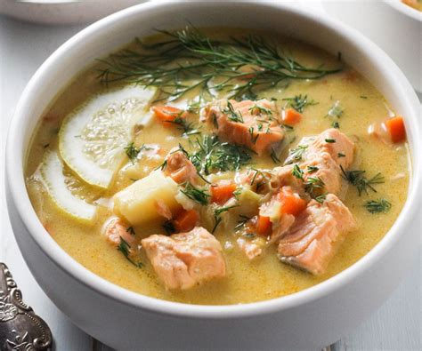

Salmon Soup

Salmon Soup that leaves you longing
The traditional finnish salmon soup, creamy and filling, it's really something to try.
Ingredients
- Quarter of a cup (about 50 grams) of unsalted butter
- 1 leek, sliced (white and light green parts only)
- 5 cups (1,25l) of fish stock. Can be substituted with water
- 1 lb (450g) of potatoes, cubed
- 1 lb (450g) of salmon fillet, de-boned, de-skinned and cut into small chunks
- 1 cup (250ml) of heavy cream
- 1 cup (10g) of fresh dill for garnish, finely chopped
- salt and pepper to taste
Steps
- Melt the butter in a pot. Add the sliced leek and saute until translucent, about 7 minutes.
- Add the stock, carrot and potatoes. Bring to a boil and cook for about 10 minutes over medium heat. At this point the potatoes should be almost ready.
- Add the salmon chunks and the cream, and cook for about 5-7 minutes more, until it starts to boil.
- Turn off the heat and add the dill, salt and pepper. Close the lid and wait for another 10 minutes.
- Enjoy!
Back to home page